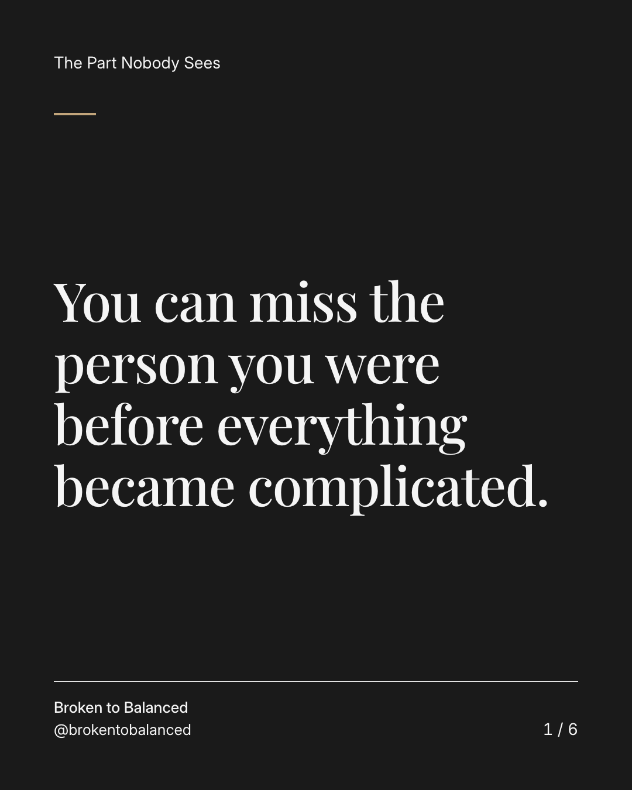
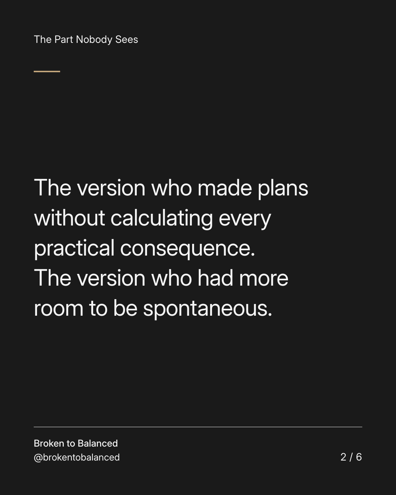
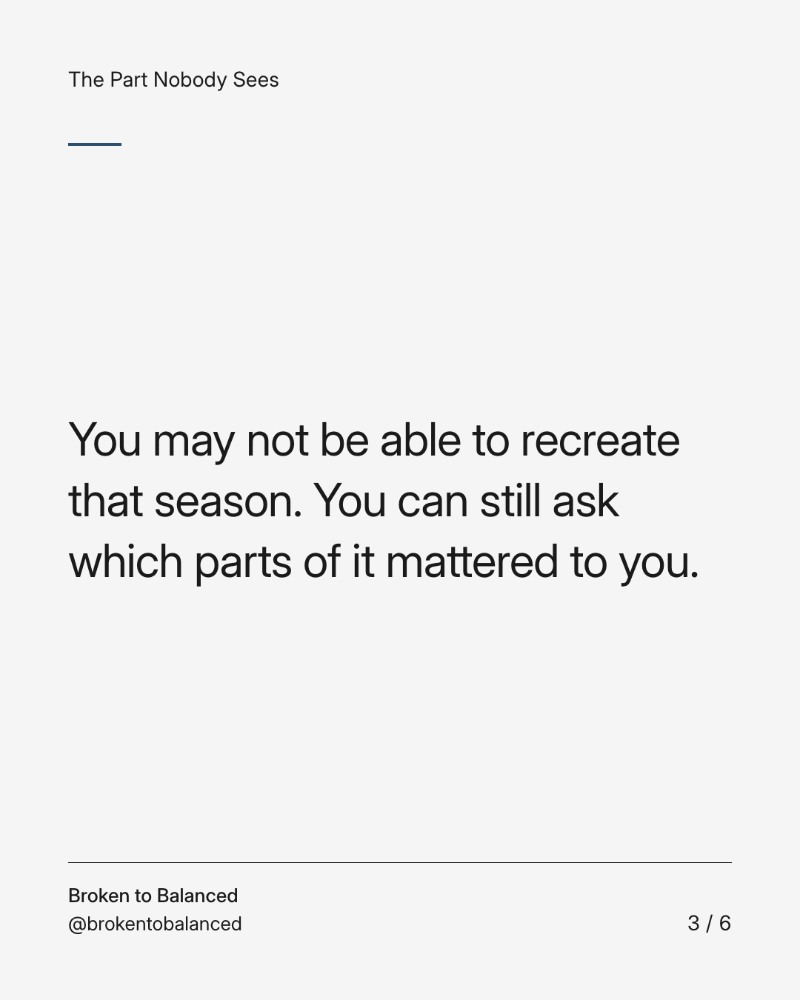
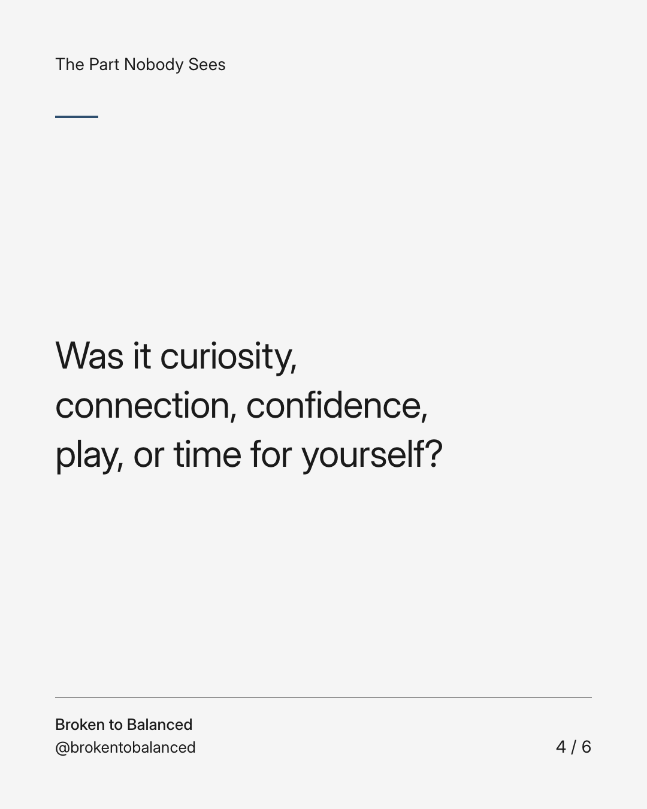
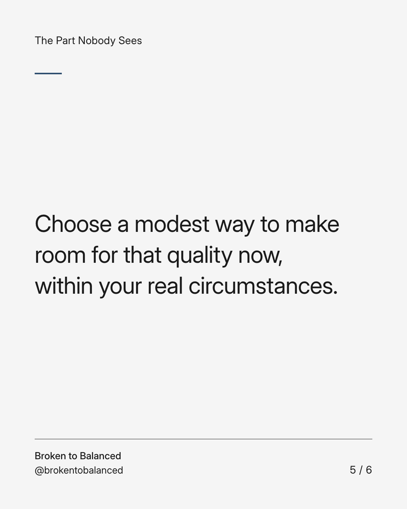
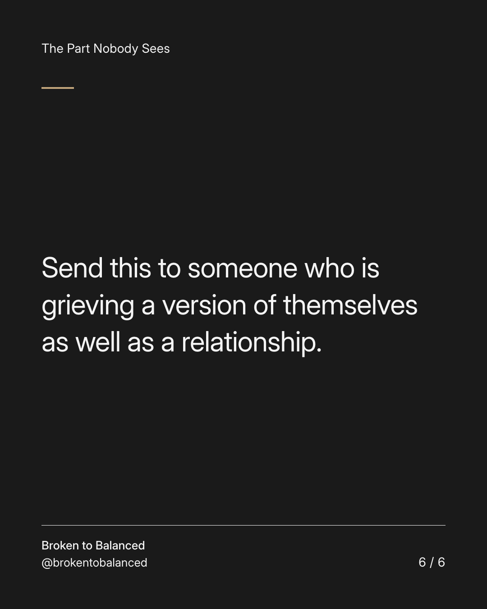

Exact text and accessibility text
You can miss the person you were before everything became complicated.
Slide 1 of 6. You can miss the person you were before everything became complicated.


Exact text and accessibility text
The version who made plans without calculating every practical consequence. The version who had more room to be spontaneous.
Slide 2 of 6. The version who made plans without calculating every practical consequence. The version who had more room to be spontaneous.


Exact text and accessibility text
You may not be able to recreate that season. You can still ask which parts of it mattered to you.
Slide 3 of 6. You may not be able to recreate that season. You can still ask which parts of it mattered to you.


Exact text and accessibility text
Was it curiosity, connection, confidence, play, or time for yourself?
Slide 4 of 6. Was it curiosity, connection, confidence, play, or time for yourself?


Exact text and accessibility text
Choose a modest way to make room for that quality now, within your real circumstances.
Slide 5 of 6. Choose a modest way to make room for that quality now, within your real circumstances.


Exact text and accessibility text
Send this to someone who is grieving a version of themselves as well as a relationship.
Slide 6 of 6. Send this to someone who is grieving a version of themselves as well as a relationship.
Exact caption
Plain-text fallback: select and copy the caption.